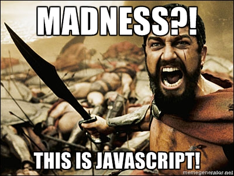
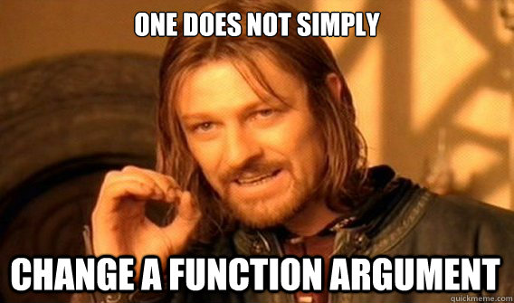

Re-introduction to JavaScript
How I stopped worrying and loved JavaScript
Although, it might just be a Stockholm Syndrome
Created by Maciej Makowski / cfiet @ githubWhy should you care?
JavaScript is not going anywhere
You don't have to love it, but you'd better learn it!
What's are you talking about?!
- How does it work?
-
I don't like JavaScript because...
And how to work around it - Meanwhile in the HTML5 world
Under the hood
-
Event-based execution model
Made for single threader, asynchronous execution -
Two, parallel type-systems
typeofvsinstanceof - Magic, unicorns, rainbows and candies
Under the hood
Event-based execution model
- Everything in browser executes as enqueued event
- Each event execution blocks the browser
Event-based execution model
while (!this.IsTerminating) {
var currentEvent = Events.GetNextEvent();
try
{
currentEvent.Execute();
}
catch(Exception e)
{
Log(e);
}
this.SleepUntilNextEvent();
}
Event-based execution model
Error isolation
<html>
<head>
<script>
window.scripts = [];
window.scripts.push("First!");
</script>
<script>
throw new Error("I don't want to live on this planet anymore!");
window.scripts.push("Second!");
</script>
<script>
window.scripts.push("Third!");
</script>
</head>
</html>
<!-- At this point, window.scripts is: ["First!", "Third!"] -->
Event-based execution model
<html>
<head>
<script>
setInterval(function () {
throw new Error("Console flooooooooooooooooood!");
}, 100);
</script>
</head>
</html>
<!-- Every 100ms new event will be generated and immediatly fail -->
Event-based execution model
Blocking, single threded
<html>
<head>
<script>
while(true) {
// this kills the browser!
}
// page will never acutally exit this script
</script>
</head>
</html>
Event-based execution model
Defer attribute
<html>
<head>
<script src="printFirst.js" defer></script>
<script src="printSecond.js"></script>
</head>
</html>
<!-- Console output:
>> Second!
>> First!
-->
Event-based execution model
What is asynchronous
- DOM events in browser
-
External requests in browser
Image.onload- AJAX requests
-
All the IO operations in NodeJS
-
Any code you want, just use
setTimeoutsetIntervalprocess.nextTick
Event-based execution model
Good practices
- Lay your pages, so all the scripts can be moved right before
</html>tag -
Use only asynchronous handlers
Say no-no to synchronous AJAX requests -
Don't do too much in single event
Divide and conquer large work-sets, spanning them across multiple events
Event-based execution model
Flow control
Due to the asynchronous nature, JavaScript code utilizes continuation-passig style (a.k.a. callbacks) to control the flow of the program.Event-based execution model
CPS example in JavaScript (NodeJS)
var fs = require("fs");
fs.open("./why-not-zoidberg.txt", "r", function onOpen(err, fd) {
if(err) {
console.err("I'm sucha a failure!");
return;
}
fs.fstat(fd, function onFStat(err, stats) {
if(err) {
console.err("Why this keeps happening to me?!");
console.log("File has " + stats.size + " bytes";
}
});
Event-based execution model
But you can CPS in C# as well!
while(HasTcpStream())
{
using(var stream = GetNextTcpStream()) {
var buffer = new byte[4096];
stream.BeginRead(buffer, 0, buffer.Length, async =>
{
int threadId
var value = stream.EndRead(async);
System.Out.WriteLine("Read {0} bytes", value);
// proces received bytes
}
);
}
}
Event-based execution model
JavaScript CPS tips, bewares and downsides
-
Follow some convention
-
jQuery: two callback params:
onsucceess, onerror -
NodeJS: first argument is error:
function(error, value, /*... other values */) { ... }
-
jQuery: two callback params:
- For more control, use NodeJS
asyncmodule orpromises - Callback hell
- Memory leaks
- Unfamilliar flow control
-
Harder to debug
No stacktrace, we lose information on how did we got here
Event-based execution model
Promises (a.k.a. futures, defers or delays)
function loadIt() {
var promise = $.ajax("http://www.youtube.com/watch?v=oHg5SJYRHA0", {
async: true
});
promise.done(function (data) {
console.log("Downloaded " + data.length + " bytes");
});
promise.fail(function (data) {
console.error("It's a TRAP!");
});
return promise;
}
Event-based execution model
Promises are fun
showLoading();
$.ajax(uri)
.always(hideLoading)
.then(
function onSuccess(text) { return JSON.parse(text); },
function onFailure(xhr) { return getErrorFor(xhr.status); }
).done( function(o) {
console.log("Object id: ", o.id);
}).fail( function(errorObj) {
console.error(errorObj.message);
});
Under the hood
Dual type system
- Interpreter types
- Object types
Dual type system
Interpreter types
-
Accessed using
typeof
undefined, object, boolean, number, string, function, xml - Fixed in ECMAScript standard
-
Nice WTF
typeof null // object
Dual type system
Object types
- Accessed using
instanceofandObject.constructor -
You're free to define your own, just invoke constructor function with
newfunction DeeDee() { this.say = function () { console.log("What does this button do?"); } } var sister = new DeeDee(); sister.constructor === DeeDee; // true sister instanceof DeeDee; // true sister instanceof Object; // true sister instanceof Array; // false
Dual type system
Object types - prototype I
function MadScientist() {
this.laughter = "Muhahahaha";
}
MadScientist.prototype = {
laugh: function () { console.log(this.laughter); }
}
function Dexter() {
MadScientist.call(this, arguments);
this.saying = "Omelette du fromage";
}
Dexter.prototype = _(new MadScientist()).extend({
say: function () { console.log(this.saying); }
});
var boy = new Dexter();
boy instanceof Dexter
// true
boy instanceof MadScientist
// true
boy instanceof Object
// true
Dual type system
Object types - prototype II
function MadScientist() {
this.laughter = "Muhahahaha";
}
MadScientist.prototype = {
laugh: function () { console.log(this.laughter); }
}
function Dexter() {
MadScientist.call(this, arguments);
this.saying = "Omelette du fromage";
}
Dexter.prototype = {
say: function () { console.log(this.saying); }
};
_(Dexter.prototype).extend(MadScientist.prototype);
var boy = new Dexter();
boy instanceof Dexter
// true
boy instanceof MadScientist
// false
boy instanceof Object
// true
I don't like the JavaScript because...

This language is MADNESS!
This language is MADNESS!
Type coersion
false == 0
// true
false == ""
// true
[] == false
// true
[[], null, undefined, null] == ",,,"
// true
This language is MADNESS!
Unexpected standard functions behaviour
parseInt("10");
// 10
parseInt("010");
// 8
parseInt("010", 10);
// 10
Math.min() < Math.max()
// false
For more such gems, visit wtfjs.com
This language is MADNESS!
But you can defend against it in three easy steps
- jshint
- jshint
- you guessed it, jshint
Seriosuly, it is not optional!
This language is MADNESS!
But you can defend against it in three easy steps
Consider some harmless JavaScript codefunction print () {
var in = document.getElementById("user-range"),
text = in.value;
range = parseInt(in);
for(i = 0; i < range; i++) {
var text = document.getElementById("user-input-" + i);
console.log(text)
}
}
This language is MADNESS!
Nope
23 errors
line 2, col 3, Missing "use strict" statement.
line 2, col 7, Expected an identifier and instead saw 'in' (a reserved word).
line 3, col 14, Expected an identifier and instead saw 'in'.
line 3, col 16, Expected an operator and instead saw '.'.
line 3, col 17, Missing semicolon.
line 3, col 17, Expected an assignment or function call and instead saw an expression.
line 4, col 24, Expected an identifier and instead saw 'in'.
line 4, col 26, Missing radix parameter.
line 7, col 9, Too many var statements.
line 7, col 14, 'text' is already defined.
line 8, col 22, Missing semicolon.
line 2, col 12, 'document' is not defined.
line 3, col 17, 'value' is not defined.
line 4, col 7, 'range' is not defined.
line 6, col 7, 'i' is not defined.
line 6, col 14, 'i' is not defined.
line 6, col 18, 'range' is not defined.
line 6, col 25, 'i' is not defined.
line 7, col 16, 'document' is not defined.
line 7, col 56, 'i' is not defined.
line 8, col 5, 'console' is not defined.
line 1, col 15, 'print' is defined but never used.
line 2, col 9, 'in' is defined but never used.
This language is MADNESS!
What will jshint catch?
All the madness
-
Missing semicolons, commas, braces
You'll be sure that browser will parse the file correctly -
Unwanted type cohersion
== instead of === -
Undefined variables, global scope access
Missing vars -
Strange constructs
Assingment instead of comparision, new used for side-effects - Lots and lots of other stuff
This language is MADNESS!
Conclusion
Seriously, it's the law!
I don't like the JavaScript because...

Refactoring is hard!
Refactoring is hard!
- JavaScript is dynamic
- Refactoring problems is inherent property of all dynamic languages
- ...and static as well
- Testing is the answer
Refactoring is hard!
Unless you have tests
- How do you know, you did not break anything?
- Unit testing is a MUST-HAVE
- Component testing is probably won't hurt as well
I don't like the JavaScript because...
Everything is global!
Everything is global!
-
Most code utilizes global variables:
jQuery, $, _, modernizr, ko - Except, it does not have to!
- Good solution: RequireJS a.k.a. AMD
- Better solution: CommonJS modules as seen in NodeJS
- Google HTML5 application assemblers for a start
Everything is global!
Except is doesn't have to be!
Example module boilerplate// file scripts/app/module.js
define("app/module", ["app/dependency"], function (dependency) {
var privateField = "Noone can touch me from outside!";
function privateMember () {
privateField = "I can modify you!";
}
return {
publicMember: function () {
privateMember();
return "I modified something, but you'll never know";
}
};
});
var appModule = require("app/module");
appModule.publicMember();
I don't like the JavaScript because...
Incompatibilities between browsers
Incompatibilities between browsers
console.log("Ohai!");
- Works fine in any modern browser (read: non-IE)
- Works fine on IE if you have developer's tools opened
- Failes misreably if you don't have developer's tools opened
Incompatibilities between browsers
But browser wars are (hopefully) over!
Now we need just to wait until IE6, 7, 8 and possibly 9 die out
I don't like the JavaScript because...
SOLID, inheritance, composition, copuling
No classes, no inheritance
No inheritance
But
-
Composition over inheritance
Inheritance is the strongest form of copuling. - Just get over it and use mixins
- Understand prototype-based types if you really need it
- If you really-really-really can't live without it, use meta object system
-
If you're still not satisfied, try one of the type-checked language compiled to JavaScript
TypeScript, Rust or Dart
I don't like the JavaScript because...
No LINQ
No linq
Underscore my friend
var upperNames = _(collection).chain()
.where(function (k, i) {
return i%2 === 0;
})
.pluck('name')
.map(String.toUpperCase)
.value();
Meanwhile in JavaScript world
- Nodejs
- HTML5
- Kronos WebGL
- emscripten
-
asm.js
Not all hope is lost!